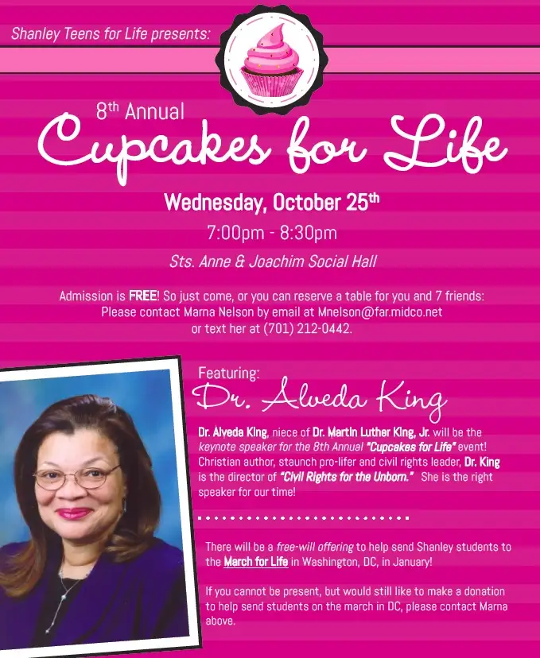

Six years ago, I had the pleasure of meeting the niece of the honorable Dr. Martin Luther King Jr.

I wrote about that experience here.
Having been exposed to her story as a post-abortive women who was also once nearly aborted as an infant, I have been paying close attention to this interesting witness of our time. Dr. Alveda King is something of a conundrum, I would think. She brings history alive, through her very self, reminding us of who her uncle was, and what he was about. During our 2011 meeting, she’d shared how he once said, “The Negro cannot win if he’s willing to sacrifice the futures of his children for immediate personal comfort and safety.”
But not only that, I remember how warm she was, both when I sat with her a bit after that presentation, and on the radio when I interviewed her for a Real Presence Radio segment.
It will be nearly six years to the date when she’s here in Fargo again, and I’m super excited to hear her talk, both on behalf of the Concerned Women for America group (that gathering will begin at 1 PM on Wednesday, Oct. 25, at the Planned Parenthood facility across the river from Fargo in Moorhead) and also — I just learned recently — for the 2017 Cupcakes for Life event hosted by the Shanley Teens for Life, the same evening.

The Cupcakes event is in its eighth year now. I’ve been to nearly all of them, and always enjoy this evening, which has the purpose of raising money for our local pro-life teens to take part in the January March for Life protest in Washington, D.C.
I’ve gone to the March with the kids several times, too. This is from the year I went with my daughter who is now a senior; the year our high school was honored to carry the lead banner.
But all that aside, Dr. Alveda King has much to teach us, much to remind us about, and many words of healing and hope to offer. So I hope, if you’re in the Fargo-Moorhead area, you might consider joining us, for either or both of these events. The earlier gathering will include several testimonies of local post-abortive women. Powerful stuff — worth listening to.
Recently, I read this Scripture verse, which I had not recalled hearing before: “If the bugle gives an indistinct sound, who will get ready for battle?” (1 Cor 14:8) Wow! That really hit home. I feel like the testimonies of these women who are going to be speaking soon in our city, on behalf of the dead babies and wounded mothers, represent this bugle call. It’s not always easy to hear, but we need to, if we’re to bring life. It’s not about condemnation, or limiting rights, or being mean to women in any shape or form, but to ensure all will have life and have it in abundance, as Jesus promised those who follow him.
There’s no better time than now to get involved in the pro-life movement and make a difference, for our children, for our world. Will you consider either joining us in person, or supporting us from afar?
Q4U: What of Dr. Martin Luther King Jr.’s message has affected you most? Have you ever heard his niece Dr. Alveda King speak? What strikes you most about her story and words?